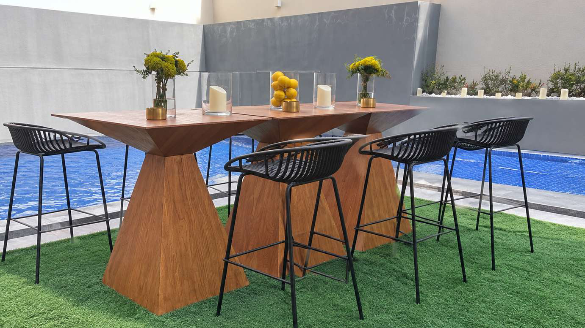
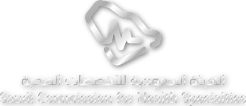
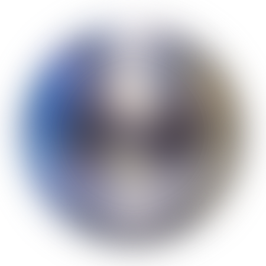
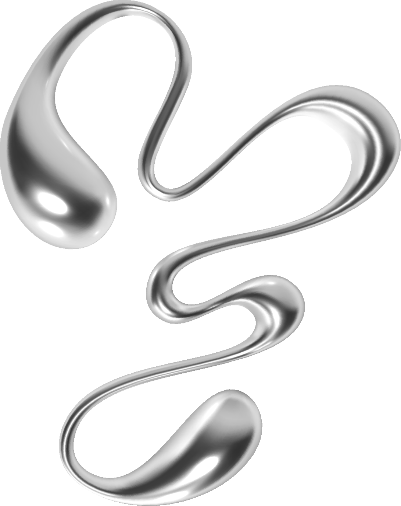
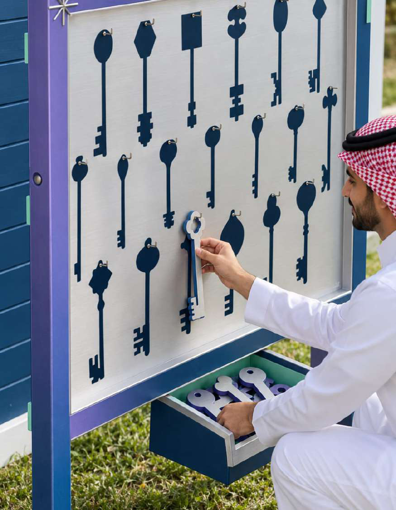
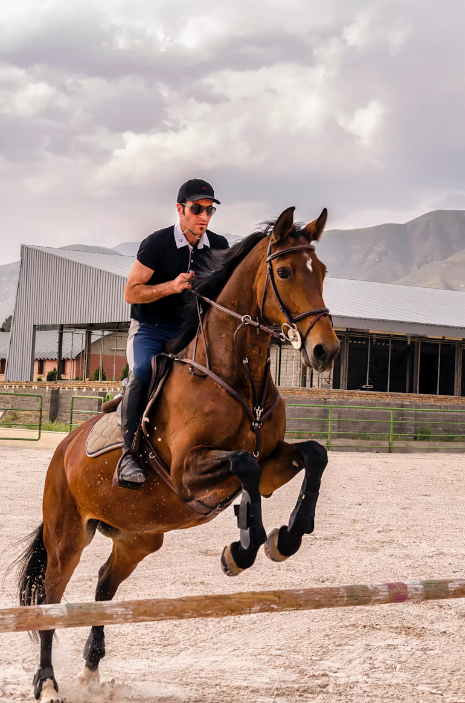
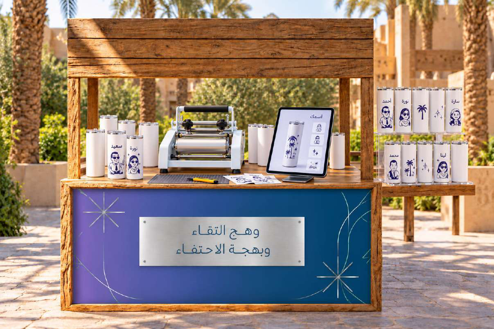

01 / تجارب اللقاء
قهوة الغروب
فنجان قهوة، وجلسة على مهل، ولحظات يحلو فيها اللقاء.

اكتشف اللقاء ↙

نلتقي لنحتفي بما أنجزناه، ونضيء معًا ما هو آتٍ.
تجربة تنبض بالتواصل والإلهام وروح الفريق.
اضغط على أي رقم في الخريطة
لتتعرف على اسم الفعالية ومكانها.

مساحة نلتقي فيها لنحتفي برحلتنا، ونجدد شغفنا، ونصنع لحظات تحمل روحنا المشتركة.
ينطلق اللقاء من فكرة أن لكل فرد وهجه الخاص، ومع كل مشاركة وتفاعل تتسع مساحة الفرح ويكتمل بهجة الاحتفاء. من الاستقبال والضيافة إلى الأنشطة التفاعلية والبرنامج المسرحي، تتكامل التجربة في رحلة واحدة ثرية بالتواصل.
الوصول والاستقبال والتنقلات
المسرح الرئيسي
الضيافة والتواصل
التجارب الخارجية
التصوير والهدايا
من أول ترحيب إلى آخر ذكرى،
كل مساحة فصل جديد في حكاية اللقاء.

فنجان قهوة، وجلسة على مهل، ولحظات يحلو فيها اللقاء.

نستعيد متعة الألعاب وبهجة التحدي معًا.

تجربة مختلفة، ولحظات أقرب إلى عالم الفروسية.
نكهات متنوعة ومساحة تجمعنا على طاولة واحدة.

أطلق خيالك، واصنع شيئًا يحمل بصمتك.
من ١٢:٠٠ ظهرًا حتى ٤:٣٠ عصرًا،
مع استمرار التجارب والأنشطة طوال فترة الحدث.
بداية اللقاء، وبهجة الوصول.
مساحات تجمعنا وأحاديث تقرّبنا.
اكتشف، شارك، واستمتع بالتجربة.
وقت للضيافة ومواصلة الحديث.
البرنامج المسرحي ولحظات الإلهام.
نختتم اللقاء، ويبقى الأثر.
نادي الفروسية، الرياض
٦ – ٧ يناير ٢٠٢٧
١٢:٠٠ ظهرًا – ٤:٣٠ عصرًا
حبينا نبلغكم وننوه عليكم
حضوركم يتطلب التنسيق مع مدرائكم ورفع طلب انتداب لمدة يوم واحد فقط
تقدر تنجز مهامك الطارئة في منطقة اللاونج
ولكن الحفل مخصص لمنسوبي الهيئة فقط
سجل سؤالك.
بكم يكتمل الوهج